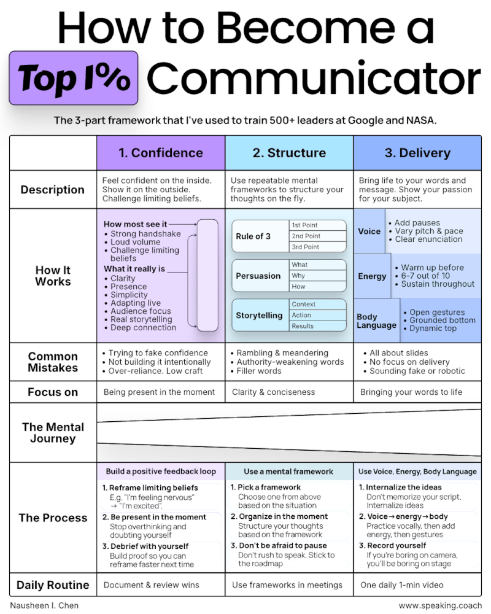
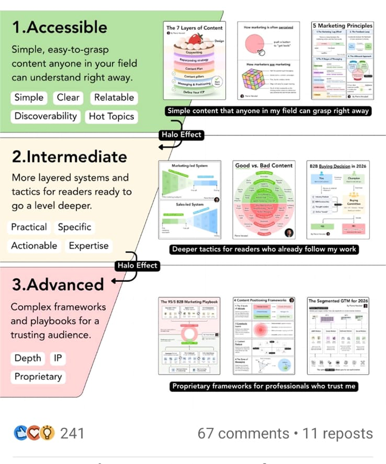
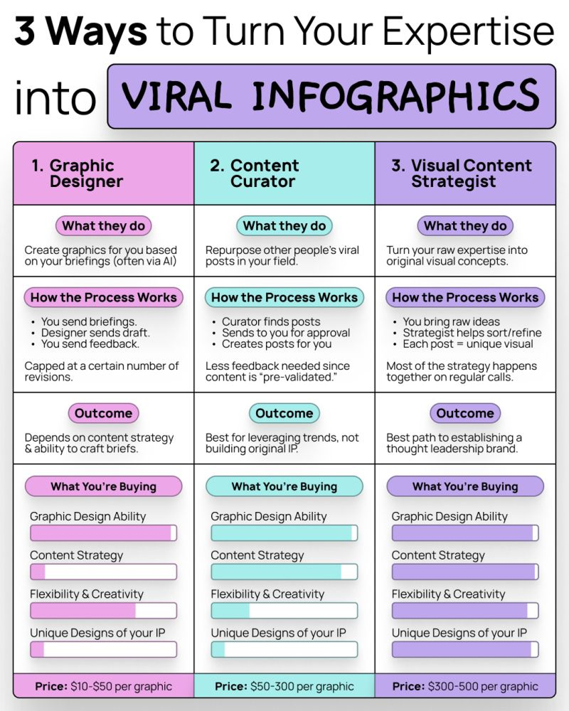
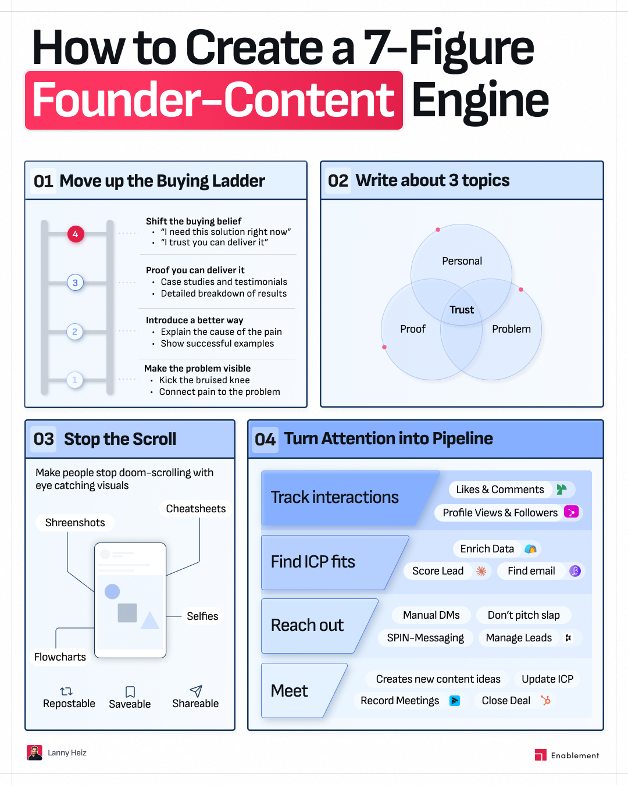
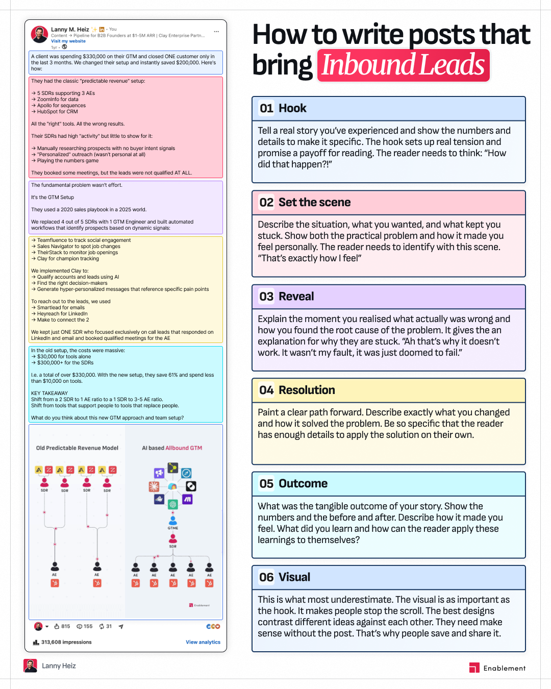
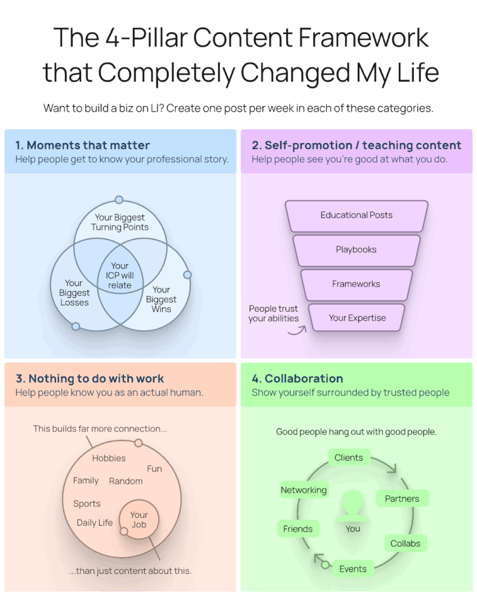

Structured
Tables, panels, steps, tiers, diagrams, labels, and comparisons create visible logic.
LinkedIn design direction
Structured, information-dense visuals that turn expertise into frameworks people can understand, save, and reuse.
01 / Canonical shell

02 / Design character
Tables, panels, steps, tiers, diagrams, labels, and comparisons create visible logic.
Copy earns its space. The visual can hold a complete framework, not only a slogan.
Flat fields, crisp navy outlines, strong typography, and blue information coding make it feel published, not productized.
03 / Palette
The palette is deliberately narrow: pale blue paper, dark navy structure, a blue information scale, and one red headline moment.
#0F1217#F5FAFF#E4F2FF#FF3762#E11E48#BE123C#D1E5FF#B5D0FF#86B0FF#4F7FEA#315FAD#17365F04 / Panel language
05 / Core archetypes
Parallel modules that explain distinct parts of one system.
Columns and rows that make differences obvious at a glance.
A real post, workflow, or screenshot paired with a structured explanation.
Levels of maturity, complexity, trust, or value connected in sequence.
Flows, loops, funnels, ladders, and diagrams that show how a mechanism behaves.
06 / Canonical references
These references define density, hierarchy, panel structure, and diagram language. They guide the system without becoming rigid templates.

Editorial matrix

Tiered progression

Comparison system

Modular framework

Annotated breakdown

Diagram-led grid
07 / Retired direction
The old references remain archived for historical context only. New production should not inherit their visual language.